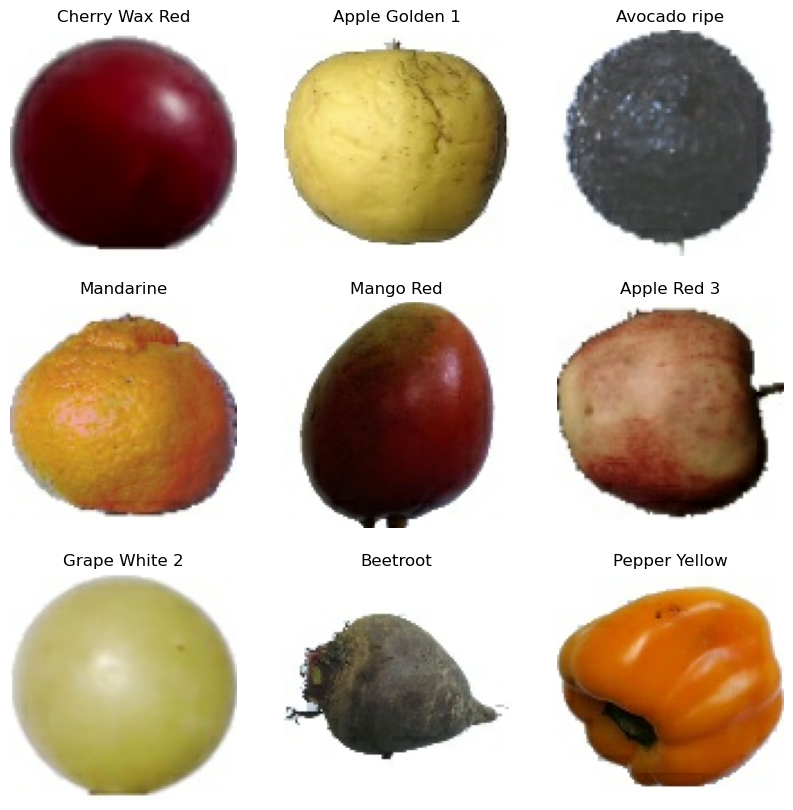

|  | Clasificación de FrutasChelsea Durazo Duarte Oscar Eduardo Galaviz Cuen Alan Raúl Ortiz Tanori Alumnos de Redes Neuronales en UNISON. |
Las redes neuronales artificiales (también conocidas como sistemas conexionistas) son un modelo computacional evolucionado a partir de diversas aportaciones científicas que están registradas en la historia. Consiste en un conjunto de unidades, llamadas neuronas artificiales, conectadas entre sí para transmitirse señales. La información de entrada atraviesa la red neuronal (donde se somete a diversas operaciones) produciendo unos valores de salida.
El objetivo de la red neuronal es resolver los problemas de la misma manera que el cerebro humano, aunque las redes neuronales son más abstractas. Las redes neuronales actuales suelen contener desde unos miles a unos pocos millones de unidades neuronales.
Una red neuronal convolucional es un tipo de red neuronal artificial donde las neuronas artificiales, corresponden a campos receptivos de una manera muy similar a las neuronas en la corteza visual primaria (V1) de un cerebro biológico. Este tipo de red es una variación de un perceptron multicapa, sin embargo, debido a que su aplicación es realizada en matrices bidimensionales, son muy efectivas para tareas de visión artificial, como en la clasificación y segmentación de imágenes, entre otras aplicaciones